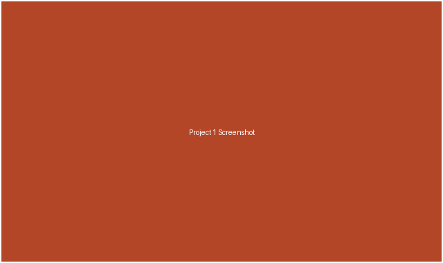

Project One: Campus Event Finder
Built this on my own over about 6 weeks, Spring 2026. In my project folder I just called it Nightowl.

Problem
Students at my school missed events they would have liked to attend simply because listings were scattered across five different club websites and a PDF calendar that was rarely updated.
Approach
I built a single searchable events page that pulls listings into one place and lets students filter by interest tag, building, and date. I used Node.js and SQLite for this one.
- Filter events by tag, location, and date range
- Mobile-friendly list and detail views
- Simple submission form for club organizers
Outcome
Around 40 students used the tool during its first week on campus, and two club officers asked to keep using it as their primary listing page.